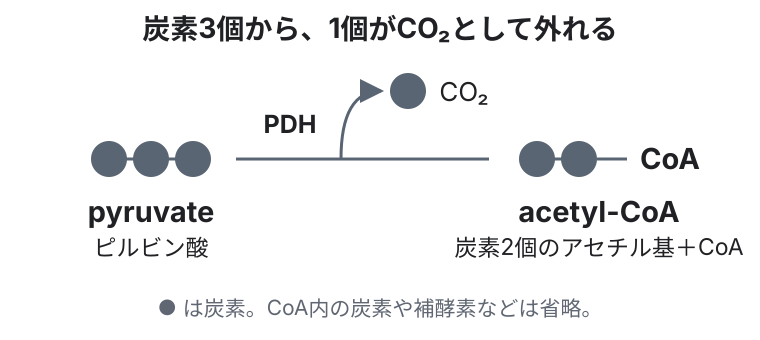
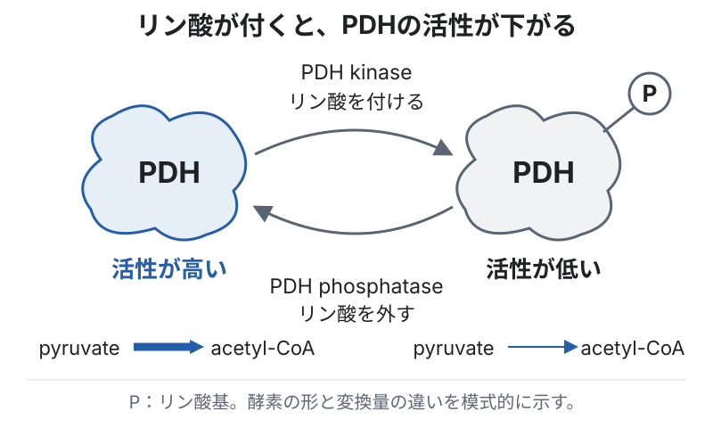
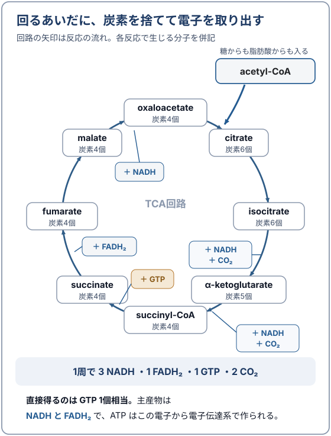
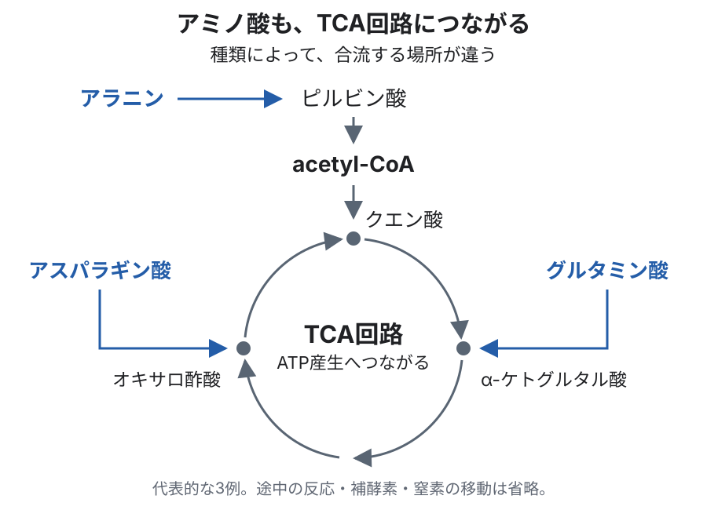
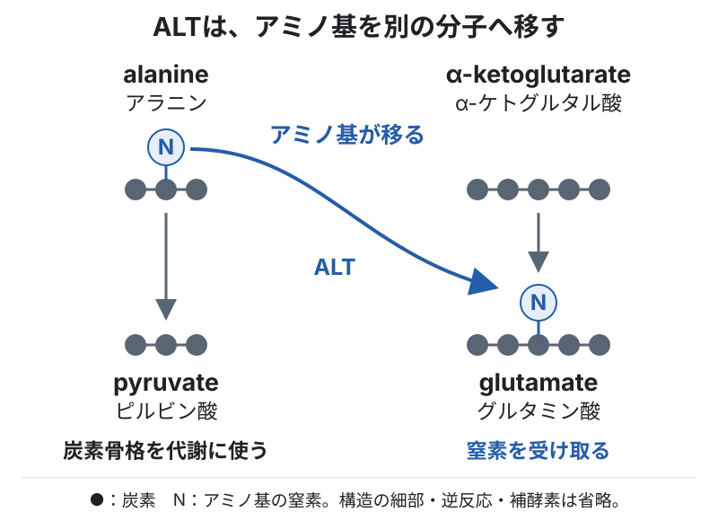
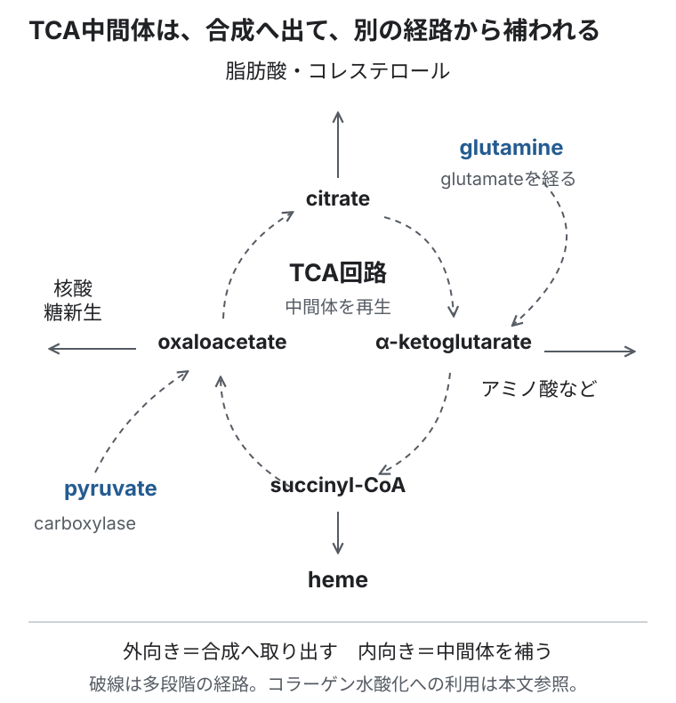

生化学・細胞生物学の基礎 ／ エネルギー
TCA回路
公開 2026-08-24 ／ 最終更新 2026-09-17
解糖系では、glucose（ブドウ糖）からpyruvate（ピルビン酸）ができました。このピルビン酸は、ミトコンドリアに入るとacetyl-CoA（アセチルCoA）に変わり、TCA回路でさらにエネルギーを取り出すために使われます。
脂肪酸も、β酸化によってacetyl-CoAになります。TCA回路は、こうして糖と脂肪酸の分解が合流する場所です。
この章の一言
TCA回路は、糖や脂肪から取り出した電子を、電子伝達系でのATP産生へつなぎます。アミノ酸からも材料を受け取り、同時に、アミノ酸・核酸・脂質などを作る材料を供給します。
1 糖や脂肪から電子を取り出し、電子伝達系へ渡す
PDHが、ピルビン酸をacetyl-CoAに変える
糖からできたpyruvateをTCA回路へつなぐのが、pyruvate dehydrogenase（PDH、ピルビン酸脱水素酵素）複合体です。ミトコンドリア内で、pyruvateをacetyl-CoAに変えます。脂肪酸からは、β酸化によってacetyl-CoAが作られます（→ 脂肪酸とケトン体）。

この反応では、炭素3個のpyruvateからCO₂が一つ抜け、残る炭素2個がacetyl-CoAになります。同時にNAD⁺が電子を受け取り、NADHになります。
詳しく読む：PDHの活性調節と低酸素への応答
細胞は、必要なエネルギー量や酸素の供給に合わせて、糖を利用する量を調節します。その調節を受ける酵素の一つがPDHです。
リン酸を付け外しして、活性を調節する
PDH kinaseがリン酸を付けるとPDHの活性が下がり、PDH phosphataseがリン酸を外すと活性が上がります。こうして活性型の割合を変え、pyruvateをacetyl-CoAへ変換する量を調節します。

PDHの活性が下がると、acetyl-CoAに変わるpyruvateが減り、lactate（乳酸）やalanine（アラニン）へ変わる割合が増えます。活性が上がると、糖由来のacetyl-CoAをTCA回路へ供給しやすくなります。
低酸素では、PDHの活性を下げる
電子伝達系では、最後に酸素が電子を受け取ります。酸素が足りなくなると、TCA回路で取り出した電子を処理しにくくなります。そこで細胞は、PDHの活性を下げ、TCA回路に供給するacetyl-CoAを減らします。pyruvateは乳酸に変わりやすくなります（→ 解糖系）。
acetyl-CoAを受け取り、回路が進む
acetyl-CoAは、炭素2個のアセチル基を運びます。これが炭素4個のoxaloacetate（オキサロ酢酸）と結びつくと、炭素6個のcitrate（クエン酸）になります。クエン酸から反応が進み、回路が一周するとオキサロ酢酸が再生されます。再びアセチル基を受け取れるため、反応が繰り返されます。
この過程で取り出した電子を、NAD⁺とFADが受け取ります。生じたNADHとFADH₂の電子は、電子伝達系でATPを作るために使われます。回路内では、ATPの合成に使えるGTP（グアノシン三リン酸）もできます。

酵素の働きを、補酵素と金属イオンが支える
PDHが反応を進めるには、ビタミンB群から作られる補酵素などが必要です。酵素の働きを助ける補酵素と金属イオンを、まとめて補因子と呼びます。マグネシウムもその一つです。
糖があっても、必要な補因子が不足すれば、その糖をエネルギーとして十分に利用できません。ビタミンやミネラルがエネルギー代謝に必要なのは、こうした酵素の反応を支えるためです。
PDHが使う5つの補酵素
PDH複合体は、E1・E2・E3という3種類の酵素が協力して反応を進めます。
| 補酵素 | 由来 | PDH複合体のどこで働くか |
|---|---|---|
| TPP（thiamine pyrophosphate） | thiamine（B1） | E1：pyruvate の脱炭酸。結合には Mg²⁺ が要る |
| lipoate（lipoamide） | lipoic acid（体内でも合成される） | E2：アセチル基を受け取って転移する |
| CoA | pantothenate（B5） | E2：アセチル基を acetyl-CoA として持ち出す |
| FAD | riboflavin（B2） | E3：使い終わった lipoamide を再酸化する |
| NAD⁺ | niacin（B3） | E3：電子を受け取り NADH になる |
回路内の α-ketoglutarate dehydrogenaseも、同じ5種類の補酵素を使います。そのため補因子不足の影響は、糖が回路へ入る段階だけにとどまりません。thiamine欠乏の動物実験でも、PDHとα-ketoglutarate dehydrogenaseの活性低下が確認されています（Neurology 1984. PMID 6493495）。
マグネシウムはTPPの結合と、PDHを再活性化するphosphataseに必要です。また、鉄と硫黄はFe–SクラスターとしてaconitaseやComplex IIに組み込まれます。アミノ酸の炭素骨格を利用するアミノ基転移には、vitamin B6由来のPLPが必要です（→ 補足「アミノ基転移の反応式と、窒素の処理」）。
血液中の濃度だけでは、細胞内の状態を十分に反映しない補因子があります。マグネシウムは大半が骨と細胞内にあり、thiamineの評価には全血のthiamine pyrophosphateやtransketolase活性なども用いられます。どの指標を測っているかを踏まえて判断します。
取り出した電子で、ATPを作る
acetyl-CoAを1分子受け取って回路が1周すると、NADHが3分子、FADH₂が1分子、GTPが1分子できます。また、炭素はCO₂として2個分放出されます。
glucose 1分子からできたpyruvate 2分子が両方ともacetyl-CoAへ進む場合、回路2周分に相当します（→ 解糖系）。
GTPはADPにリン酸を渡してATPを作れるため、1分子をATP 1分子分として数えます。さらに、NADHとFADH₂が受け取った電子を使うことで、電子伝達系ではより多くのATPを作れます。
2 アミノ酸も、エネルギー源と回路の補充に使う
アミノ酸は、タンパク質を作るだけでなく、エネルギー産生にも使われます。アミノ基を外した炭素骨格が、pyruvateやTCA回路の中間体などに変わるためです。図では、合流する場所が異なる3例を示します。

詳しく読む：糖原性・ケト原性と、糖を作れる理由
食事から糖が入ってこない間も、体は血糖を保つ必要があります。そのために肝臓などで糖を作るのが糖新生です。アミノ酸も、その材料になります。
たとえば、先ほどのALTの反応で、alanine（アラニン）はpyruvate（ピルビン酸）になります。このpyruvateからglucoseを作れます。このように、分解後の炭素骨格を糖の材料にできるアミノ酸を、糖原性（glucogenic）と呼びます。
一方、leucine（ロイシン）とlysine（リシン）は、分解しても糖の材料にはなりません。分解後の炭素はacetyl-CoAやacetoacetateになり、エネルギー産生やケトン体の材料として使われます。これがケト原性（ketogenic）です。アミノ酸によっては、糖原性とケト原性の両方の経路を持ちます。
AST・ALTは、アミノ酸を代謝につなぐ酵素
採血で見慣れたALT（alanine aminotransferase）とAST（aspartate aminotransferase）は、本来、細胞内でアミノ酸の代謝を担う酵素です。ALTはalanineから、ASTはaspartateから、アミノ基をα-ketoglutarateへ渡します。
アミノ基を渡したalanineはpyruvateに、aspartateはoxaloacetateになります。アミノ基を移すことで、残った炭素骨格をエネルギー代謝に利用できます。

肝細胞などが傷つくと、細胞内のAST・ALTが血中へ出てきます。採血では、その血中の酵素活性を測ることで、肝細胞の傷害を知る手がかりにしています。細胞内で代謝を担っている酵素が、血中では細胞傷害の指標になるというつながりです（日本臨床検査医学会『臨床検査のガイドライン2021』）。
詳しく読む：アミノ基転移の反応式・窒素の処理・BUN
アミノ酸もエネルギー産生や糖を作る材料になります。そのときは、窒素を含む部分を処理し、残る炭素骨格を代謝へ入れます。炭素骨格の形が違うため、回路への入口も一つではありません。
アミノ基を移し、炭素骨格を利用する
アミノ酸は、窒素を含むアミノ基と、炭素でできた骨格を持っています。エネルギー産生や糖新生に使えるのは、主に炭素骨格の側です。一方、余った窒素は体内にためておけないため、分けて排泄する必要があります。
多くの場合、最初に aminotransferase（トランスアミナーゼ）が、アミノ酸のアミノ基を α-ketoglutarate へ移します。この反応がアミノ基転移です。aminotransferase が働くには、補酵素の pyridoxal phosphate（PLP、vitamin B6の誘導体）が必要です。
アミノ基を渡したアミノ酸は、炭素骨格（α-ケト酸）になります。反対に、アミノ基を受け取った α-ketoglutarate は glutamate になります。つまりglutamateは、いろいろなアミノ酸から出た窒素を、いったん集める役目です。
ALT・ASTは、アミノ基を移す酵素
ALTはalanineをpyruvateに、ASTはaspartateをoxaloacetateに変えるアミノ基転移を担います。反応式は次のとおりです。
glutamateに集めた窒素は、尿素にして排泄する
glutamateに集まった窒素は、glutamate dehydrogenaseによってアンモニウムイオン（NH₄⁺）として外されます。これが酸化的脱アミノです。生じた窒素は肝臓の尿素回路で処理されます。尿素のもう一つの窒素はaspartateから供給されます。glutamateはα-ketoglutarateに戻り、再びアミノ基を受け取れます。
回路の中間体を補う
反応の途中でできる分子を中間体と呼びます。中間体を体の成分の合成に使うと、回路内の量が減るため、別の反応で補う必要があります。
たとえば、glutamine（グルタミン）からglutamate（グルタミン酸）、さらにα-ketoglutarate（α-ケトグルタル酸）を作ることで、回路の中間体を補えます。アミノ酸は、エネルギー源になるだけでなく、回路を続けるための材料も供給しています。
アミノ酸以外では、pyruvateからoxaloacetateを作る反応も補充に使われます。ピルビン酸カルボキシラーゼが炭素を一つ加え、炭素3個のpyruvateから炭素4個のoxaloacetateを作ります。
詳しく読む：中間体の補充反応と補因子
中間体の補充をanaplerosis（アナプレローシス）、合成のために取り出すことをcataplerosisと呼びます。エネルギー産生と合成材料の供給の両方を担う性質が、amphibolic（両用性）です。
pyruvate carboxylaseの反応には、ATPとbiotin（B7）が必要です。同じ反応は糖新生にも使われます。glutamineからglutamate、α-ketoglutarateへ進む経路はglutaminolysisと呼ばれ、増殖中の細胞でもよく使われます。
3 アミノ酸・核酸・脂質などを作る材料を供給する
TCA回路は、エネルギー産生とともに、細胞の成分を作るための材料の供給も担います。回路の中間体から、次のような物質が作られます。
| 抜き出す中間体 | 何になるか |
|---|---|
| citrate | 細胞質へ出て、脂肪酸・コレステロールの材料になる |
| α-ketoglutarate | glutamate を経てアミノ酸へ。コラーゲンの proline の水酸化にも使われる |
| oxaloacetate | aspartate を経て核酸の材料になる。malateなどに変えて炭素を細胞質へ渡し、糖新生につなぐ |
| succinyl-CoA | heme の材料になる |

増殖・肥大・修復で合成の需要が増えるときには、中間体を材料として取り出しながら、回路を続けるための補充も必要です。ATP産生へ電子を渡すことと、合成へ材料を供給することを、細胞の需要に応じて両立しています。
コラーゲンの成熟にも、TCA回路の中間体が使われる
コラーゲンは、作られたあとに prolyl hydroxylase・lysyl hydroxylase による水酸化を受けて初めて成熟します（工程の詳細は線維芽細胞とコラーゲン）。この酵素は反応のたびに α-ketoglutarate を共基質として消費します。TCA回路の中間体が、そのままコラーゲンの加工に使われているということです。
この水酸化には、O₂・Fe²⁺・ascorbate（ビタミンC）も必要です。α-ketoglutarateは反応を支える材料として使われ、succinateとCO₂に変わります。コラーゲンの構造に組み込まれるわけではありません。
この章の到達点
- 糖や脂肪由来のacetyl-CoAから電子を取り出し、電子伝達系でのATP産生につなぐ。
- アミノ酸の炭素骨格も、エネルギー源や回路の中間体の補充に使われる。
- 回路の中間体は、アミノ酸・核酸・脂質などを作る材料にもなる。
電子伝達系では、受け取った電子を使ってATPを作る仕組みを見ます。
この章の更新
- ATP産生と合成材料の供給を需要に応じて両立する説明を第3節に補足。既存の構成・図を維持。
- 3本柱に再構成し、PDHと5種類の補酵素の表・ASTとALT・コラーゲン成熟を本文に配置、詳しい反応は対応する本文の直後に折りたたみで配置
- TCA回路の収支を全章共通の反応式表示に変更
- 初公開